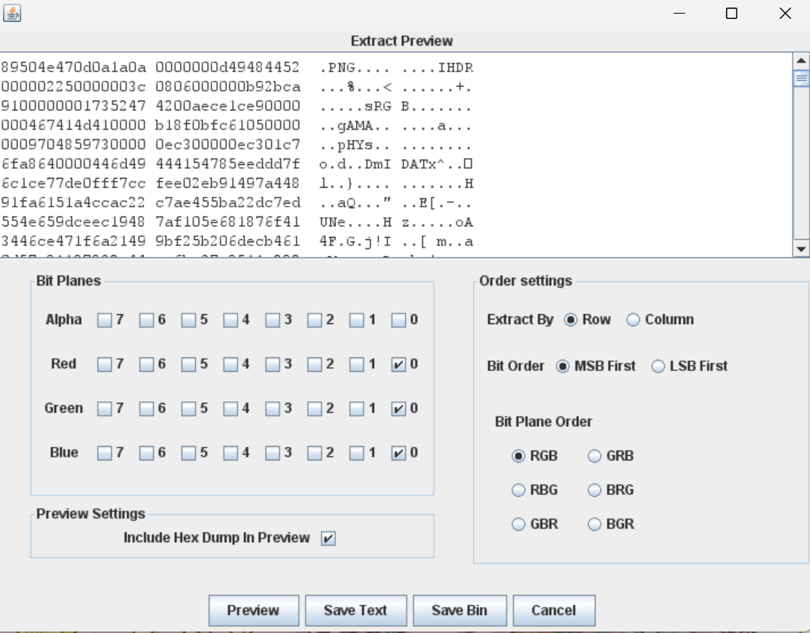
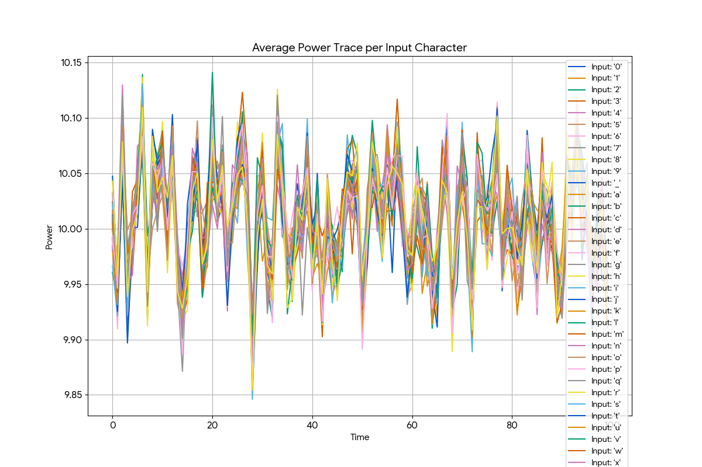
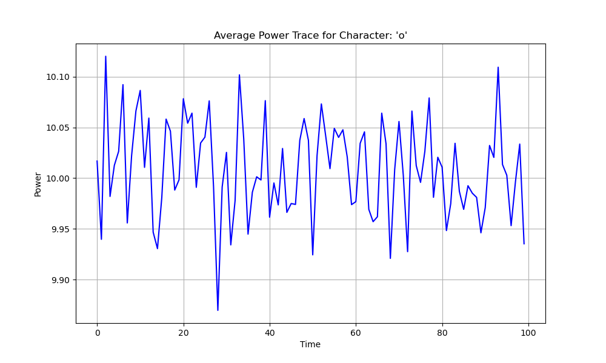
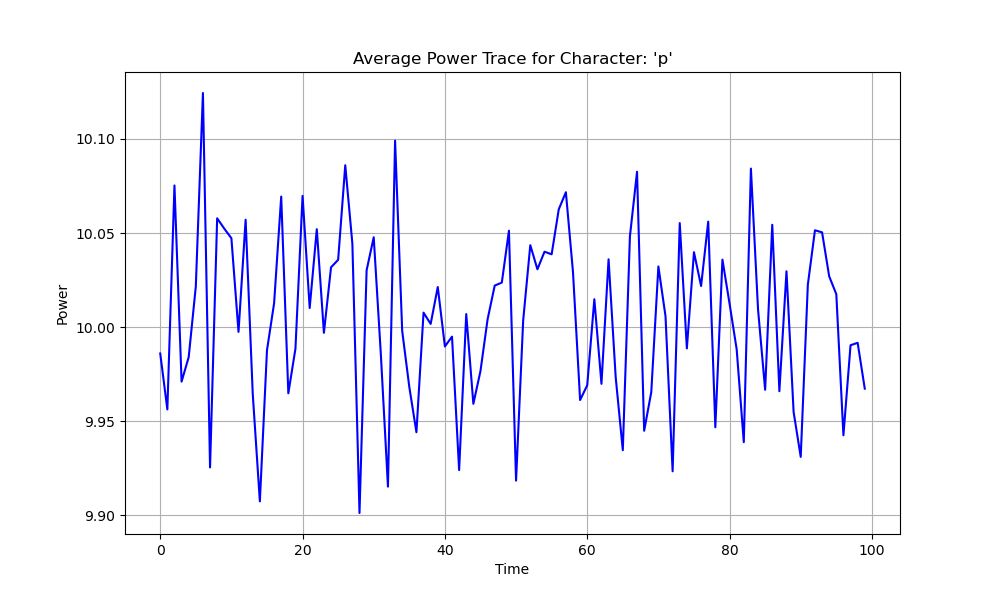
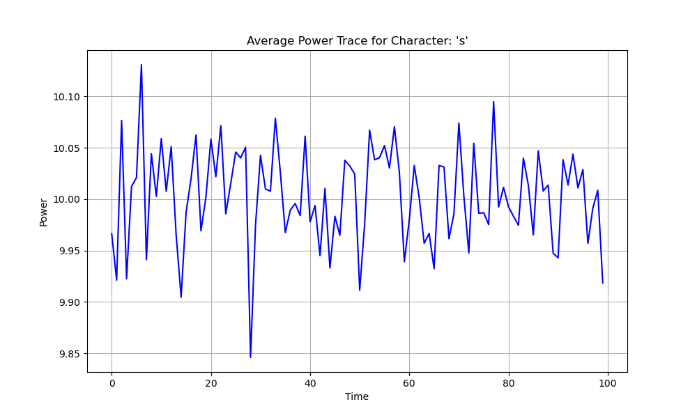
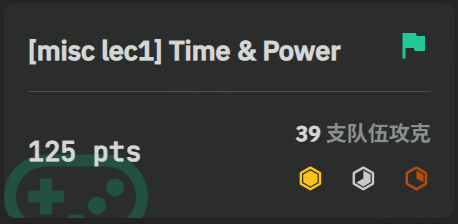

Misc Lab 2 ：隐写与其他misc¶
1 Challenge 1:songmingti¶
所得图片用010Editor打开，发现图片在EOI标志后还有一大块没有显示的内容，观察到FF D8 FF推测是加了一张图片进去，接下来就是把这张图片分离提出来


得到图片及flagAAA{the_true_fans_fans_nmb_-1s!}

通过截图：

2 Challenge 2:miaomiaomiao¶
一点点把戏，view-source看一下源码，下载到图片


放进010Editor，exif中观察到一串密码m1a0@888

猜测大概率为工具题，用steghide提取一下隐藏文件，得到secret_file.txt

010000010100000101000001011110110100010000110000010111110101100100110000011101010101111101001100001100010110101101100101010111110101001101110100011001010011100101001000001100010110010001100101010111110100110100110001011000010011000001111101
每8位二进制转成对应ASCII码，得到对应flag：AAA{D0_Y0u_L1ke_Ste9H1de_M1a0}
通过截图：

3 Challenge 3:easy LSB¶
把图片放进StegSolve，凭借直觉在三个通道0处上发现不对劲，看下数据格式符合我们的直觉，把它提取出来


得到的图片只有一半，于是扔进010Editor，修改一下图片高度由此得到完整图片

获得对应flagAAA{I_l0v3_Ar1har4_N4n4m1_for3ver}通过截图

4 Challenge A: Palette Stego¶
反正zsteg是万能的，放进去操作一下，提出隐写前的flagAAA{gOoD_joB_P4lEtTE_M0D3_c@N_al$0_57E9o!}

虽然要求不能直接用工具，但是为我们提供了思路，根据最终提取出flag的信息，需要遍历图像中每个像素并查出其在palette中的对应颜色，然后获取绿色分量，提取LSB即可重建flag，具体实现如下
from PIL import Image
import sys
def extract_flag(image_path):
img = Image.open(image_path)
palette = img.getpalette()
width, height = img.size
bits = []
#逐行遍历所有像素
for y in range(height):
for x in range(width):
# 获取像素对应的调色板索引
palette_index = img.getpixel((x, y))
# 从调色板中找到该索引对应的绿色值
green_value = palette[palette_index * 3 + 1]
# 提取其最低有效位 (LSB)
bits.append(str(green_value & 1))
byte_stream = "".join(bits)
message = ""
for i in range(0, len(byte_stream), 8):
byte = byte_stream[i:i+8]
if len(byte) < 8:
break
message += chr(int(byte, 2))
return message
if __name__ == "__main__":
image_file = sys.argv[1]
flag = extract_flag(image_file)
print(flag)
得到flag是相同的，题目通过截图，附件包含crack.py


6 Challenge C：Time&Power¶
根据hint找了一下Power Trajectory Diagram，加上有这方面的学习，大概理解题目背景，先通过脚本尝试可视化数据，最开始的版本把所有字符处理在了一起，可视化效果很差，而后考虑把每个字符分开并计算了功率曲线的平均值，生成效果示意如下


明确知道最终flag以0ops{开头，先把这几张图调出来




观察发现大概的意思是在对应位对应的字符本应出现的峰值会消失，尝试一个个比对图像，由此得到完整flag0ops{power_1s_a11_y0u_n55d}，题目通过截图，附件包含analyze.py以及各个字符图像

8 Challenge E:PPC¶
8.1 polyglot¶
核心思想是通过两种语言不同的语法屏蔽机制去实现，对于python而言#作为注释会被自动忽略，而对于c而言通过#if可以注释掉python段落，从而达到相同的输出flag的目的，附件包含polyglot.cpp
#if 0
import sys
try:
with open('flag.txt', 'r') as f:
sys.stdout.write(f.read())
except FileNotFoundError:
pass
exit()
#endif
'''
#include <iostream>
#include <fstream>
#include <string>
int main() {
std::ifstream file("flag.txt");
if (file.is_open()) {
std::string line;
while (std::getline(file, line)) {
std::cout << line << std::endl;
}
file.close();p
}
return 0;
}
'''
8.2 Quine¶
核心思想是将程序分为两部分：数据部分包含一个字符串，它精确地存储了程序中逻辑部分的源代码。逻辑部分则是一段代码，它的任务是打印出数据部分的字符串内容。然后，利用这个字符串作为数据，再次打印出字符串自身（包括定义它的引号、分号等所有语法结构）。
#include <stdio.h>
char*s="#include <stdio.h>%cchar*s=%c%s%c;%cint main(){printf(s,10,34,s,34,10);return 0;}%c";
int main(){printf(s,10,34,s,34,10);return 0;}
验证通过截图，附件包含quine.c